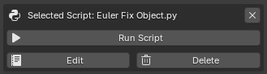

Running Scripts¶
The Run Script feature allows you to execute Python scripts directly from Blender without manually opening the Text Editor.
This makes it easy to build personal tools, utilities, and workflow automation scripts that can be launched with a single click.

Run Script Section
Selecting a Script¶
Before a script can be executed, it must be selected from the Available Scripts list.
To select a script:
- Open Available Scripts
- Navigate to the desired folder
- Click the script name
Once selected, the script becomes active and the Selected Script panel appears.
Example:
RenameObjects
Running a Script¶
To execute the selected script:
- Select a script
- Click Run Script
The script is executed immediately inside Blender's Python environment.
Example:
RenameObjects.py
Result:
Executed script: RenameObjects.py
How Execution Works¶
GH Script Manager executes the selected Python file inside Blender's Python environment.
The script is loaded from disk, compiled, and executed as a standalone Python file.
This means scripts have access to:
- Blender Python API (
bpy) - Current scene data
- Objects
- Materials
- Animation data
- Add-ons
- Custom Python modules available to Blender
Example:
import bpy
for obj in bpy.context.selected_objects:
obj.location.x += 1
During execution, the script receives standard Python file context:
__name__ = "__main__"
__file__ = script_path
This makes it suitable for running Blender utilities, automation tools, and general Python scripts.
Error Handling¶
If a script generates an error during execution, Blender will stop the script and display an error message.
Example:
undefined_variable += 1
Result:
Script execution failed: error message
The original script file is not modified.
Running Imported Scripts¶
Imported scripts behave exactly the same as newly created scripts.
Example:
Import Script
↓
Select Script
↓
Run Script
No additional setup is required.
Script Requirements¶
GH Script Manager does not impose any restrictions on script contents.
Scripts may contain:
- Blender tools
- Operators
- Panels
- Utility functions
- Automation tools
- Custom workflows
As long as the script can run inside Blender's Python environment, it can be executed through the add-on.
Safety Notes¶
Scripts execute with the same permissions as any Python script running inside Blender.
Only run scripts from trusted sources.
Be especially careful when executing scripts that:
- Modify files
- Delete data
- Install software
- Download external content
Always review unknown scripts before running them.
Typical Workflow¶
-
Create or import a script
-
Select the script:
RenameObjects.py
- Click:
Run Script
-
The script executes immediately
-
Continue working inside Blender